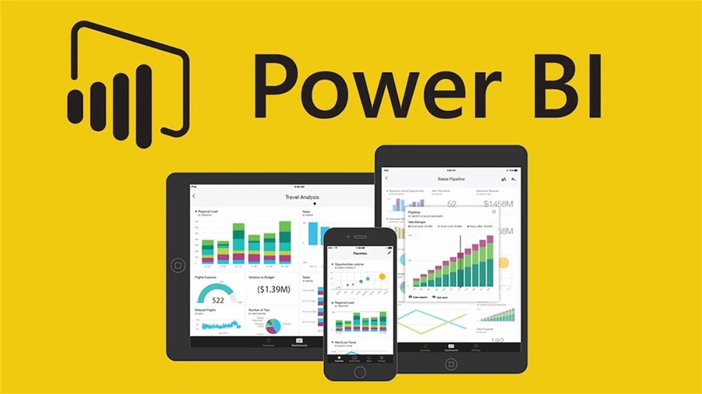

Excel
Cursos desde lo básico hasta funciones avanzadas y Power Query.
Excel
Cursos desde lo básico hasta funciones avanzadas y Power Query.
CURSO DE POWER BI
Herramienta de Business Intelligence

Nivel del Curso
El curso está diseñado para participantes que comienzan desde principiante y avanza hasta nivel avanzado, cubriendo todos los aspectos esenciales:
- Nivel Principiante: No se requiere experiencia previa en Power BI ni en análisis de datos. Comienza con los conceptos básicos.
- Nivel Intermedio: Ideal para quienes tienen conocimientos básicos y quieren aprender transformaciones de datos y análisis más complejos.
- Nivel Avanzado: Enfocado en el dominio del análisis avanzado, el uso de DAX y la creación de dashboards interactivos.
Metodología
- Clases en vivo a través de Zoom, facilitando la interacción directa con el instructor.
- Clases grabadas disponibles para consulta posterior.
- Actividades prácticas: Ejercicios y proyectos aplicados.
- Asesoramiento personalizado durante y después de las sesiones.
Objetivos del Curso
Al finalizar este curso, los participantes serán capaces de:
- Descargar, instalar y personalizar el entorno de Power BI.
- Importar y transformar datos desde múltiples fuentes utilizando Power Query.
- Diseñar modelos de datos eficientes y establecer relaciones entre tablas.
- Crear medidas avanzadas y columnas calculadas con el lenguaje DAX.
- Diseñar dashboards interactivos y personalizados para la toma de decisiones.
- Aplicar herramientas de inteligencia artificial para análisis avanzado.
- Desarrollar y presentar un proyecto final basado en datos reales.
Formas de Pago
Transferencia bancaria: Banco Itaú, Cta. Nº 720005407
Titular: Oscar Gonzalez Frutos
CI: 3584172
Alias: 3584172
Giros Tigo: 0983 352 932
Costo del Curso
Costo del Curso: 350.000 Gs (Pago Único). Incluye materiales, grabaciones y certificado.
Descuentos para grupos:
- 2 personas: 300.000 Gs c/u
- 3 personas: 250.000 Gs c/u
- 4 o más: 200.000 Gs c/u
Únete al Grupo de WhatsApp
Para estar al tanto de las últimas novedades, actualizaciones y detalles importantes del curso, te invitamos a unirte a nuestro grupo de WhatsApp.
Haz clic en el siguiente enlace para unirte:
Únete al Grupo de WhatsApp
Contenido del Curso
Sección 1: Introducción a Power BI
- Bienvenida al curso y estructura general.
- Descarga e instalación de Power BI Desktop.
- Configuración inicial y personalización del entorno.
- Exploración de la interfaz y herramientas principales.
- Flujo de trabajo básico: del origen de datos al reporte final.
Sección 2: Conectando y Transformando Datos con Power Query
- Conexión a datos desde diversas fuentes.
- Limpieza de datos: Eliminación de duplicados y errores.
- Transformaciones básicas y avanzadas:
- Pivotear y despivotear columnas.
- Combinar y anexar tablas.
- Creación de fórmulas personalizadas.
- Automatización: Configuración de procesos repetitivos.
Sección 3: Modelado de Datos
- Diferencias entre tablas de hechos y dimensiones.
- Importancia de las relaciones entre tablas.
- Creación de relaciones entre tablas: esquemas estrella y copo de nieve.
- Optimización del modelo para consultas rápidas.
Sección 4: Análisis Avanzado con DAX
- Introducción al lenguaje DAX: propósito y sintaxis básica.
- Creación de columnas calculadas y medidas.
- Funciones avanzadas: matemáticas, de tiempo, y filtros.
Sección 5: Creación de Dashboards Interactivos
- Diseño de reportes interactivos.
- Uso de visualizaciones avanzadas.
- Interactividad con filtros, segmentaciones y botones.
Sección 6: Publicación y Distribución de Reportes
- Publicación de reportes en Power BI Service.
- Configuración de seguridad y permisos de acceso.
- Uso de Power BI Mobile para dispositivos móviles.
Sección 7: Proyecto Final
Desarrollo de un proyecto final basado en datos reales, aplicando todas las técnicas aprendidas.
Python
Herramientas de análisis, machine learning y visualización avanzada.
R
Herramientas de análisis, machine learning y visualización avanzada.
SQL
Gestión de bases de datos, consultas y optimización de procesos ETL.